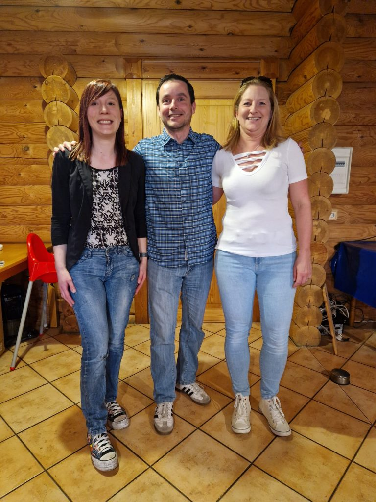

    <div class="container page-body">
      <div class="layout">
        <div>
          <p>
            Herzlich willkommen auf der Seite des <strong>Fördervereins Badminton in Eppstein e.V.</strong>
            Wir sind eine engagierte Gruppe von Menschen, die sich der Förderung und Entwicklung des
            Badmintonsports in Frankenthal, Eppstein und Umgebung verschrieben haben. Unser besonderes
            Augenmerk liegt auf der Unterstützung von Kindern, Jugendlichen und Erwachsenen, indem wir
            ihnen die Möglichkeit bieten, ihre Badmintonfähigkeiten zu verbessern und sich in einer
            freundlichen und unterstützenden Umgebung sportlich zu betätigen.
          </p>

          <h2>Unsere Ziele</h2>
          <p>
            Unser Hauptziel ist es, die Begeisterung für Badminton zu fördern und die Entwicklung von
            talentierten Spielern in Eppstein und Umgebung zu unterstützen, unabhängig von Alter oder
            Erfahrungsniveau. Wir glauben fest daran, dass Badminton eine großartige Möglichkeit bietet,
            körperliche Fitness, Teamgeist und Fairplay zu fördern, sowohl für Jugendliche als auch für
            Erwachsene. Mehr Informationen könnt ihr auch unserer
            <a href="assets/docs/satzung-2025.pdf" target="_blank" rel="noopener">Satzung</a>
            entnehmen.
          </p>

          <h2>Unsere Aktivitäten</h2>
          <p>
            Der Förderverein Badminton in Eppstein organisiert eine Vielzahl von Aktivitäten und
            Veranstaltungen, die für alle Altersgruppen und Erfahrungsniveaus geeignet sind. Von
            speziellen Jugendtrainings bis hin zu Erwachsenen-Freizeitmöglichkeiten und der Organisation
            von Badminton-Länderspielen bieten wir ein vielfältiges Programm an, um die Bedürfnisse
            unserer Mitglieder zu erfüllen.
          </p>

          <hr class="court-divider">

          <h2>Mitgliedschaft</h2>
          <p>
            Wir laden alle Badminton-Begeisterten, unabhängig von Alter oder Erfahrungsniveau, ein,
            Mitglied im Förderverein Badminton in Eppstein zu werden und Teil unserer unterstützenden
            Gemeinschaft zu werden. Für nur wenige Euro im Jahr leistet ihr bereits einen großen Beitrag!
          </p>
          <p>
            <a class="btn btn-accent" href="assets/docs/mitgliedsantrag-foerderverein.pdf" target="_blank"
              rel="noopener">Mitgliedsantrag Förderverein</a>
          </p>

          <h2>Kontakt</h2>
          <p>
            Bei Fragen oder Anregungen zögert bitte nicht, uns zu kontaktieren. Ihr könnt uns per
            E-Mail unter <a
              href="mailto:foerderverein@tsv-eppstein-badminton.de">foerderverein@tsv-eppstein-badminton.de</a>
            erreichen, oder sprecht uns zu den regulären Trainingszeiten einfach an. Wir stehen gerne
            zur Verfügung!
          </p>

          <h2>So unterstützt ihr uns</h2>
          <p>
            Du kannst den Förderverein ganz einfach unterstützen, indem du dich
            <a href="assets/docs/mitgliedsantrag-foerderverein.pdf" target="_blank" rel="noopener">anmeldest</a>.
            Unsere Arbeit ist ehrenamtlich, sämtliche Einnahmen investieren wir zu 100&nbsp;% in die
            Erreichung unserer Ziele. Wer daneben auch aktiv unterstützen will, ist dazu gerne
            eingeladen.
          </p>
        </div>

        <aside class="card" style="padding:0.9rem; border-left:none;">
          
          <p style="font-size:0.85rem; color: var(--ink-soft); margin: 0.7rem 0 0;">
            Der Vorstand von links nach rechts: Bea, Kai, Tanja
          </p>
        </aside>
      </div>
    </div>
  
